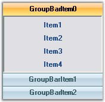

This section discusses the features of the GroupBar control of the Navigation Package.
Features
· Custom Colors can be applied for GroupBar control. See Visual Styles topic.

Figure 853: Custom Color applied to the GroupBar Control
· Appearance and Behavior Settings
· Settings can be applied to change the look and feel of the GroupBar control and Items.
· Full Appearance support including Alpha-Blending, Gradient Rendering, etc., is provided.
· Various options are provided for customizing the border of the GroupBar and GroupBar Items, scrolling through the GroupBar client controls, highlighting GroupBar Items, etc.
· Provides Flat look and feel of the GroupBar.
· Provides Localization support.
· Link Selection Support
You can either have a single selected link or several selected links in each individual GroupBar Item.
· Text Settings
Provides options to align the text of the GroupBar Items to the Left , Right or Center.
GroupBar control provides options for renaming the GroupBar Items at run-time. This is described as the Inplace Renaming feature of the GroupBar control.
· Image Settings
Large images can be displayed on the header of the GroupBar. Images can also be displayed on the header of the Stacked GroupBar.
· Header Customization
Different colors can be applied to the header and header text of the GroupBar Items. The font and height of the header of the GroupBar control can also be customized.
· Stacked GroupBar
The GroupBar Items can be displayed in a Stack like fashion. Stacked GroupBar provides a Navigation Pane that can be viewed at the bottom of the Groupbar, which helps one to navigate to different sections of the GroupBar.
Ability to display the selected GroupBar Item's image on the header of the Stacked GroupBar.
· Nested GroupBar
A GroupBar Control can be added as a Child control to another GroupBar Control.
In fact any .NET control can be hosted in a GroupBar for maximum flexibility. Thus the GroupBar control can be deployed as a Generic Control Container.
· Visual Styles
Visual Styles like the Office XP Style, Office 2003 Style and Office 2007 Style are provided. The new Office2007Theme property provides the Office 2007 Visual Style with the color themes Blue, Black and Silver.
· Themes Support
Using the ThemesEnabled property, themed appearance can be provided for the GroupBar control.
· Serialization Support
Serialization allows the user to save and restore the State information of the GroupBar Items when a GroupBar is in the Stacked Mode.